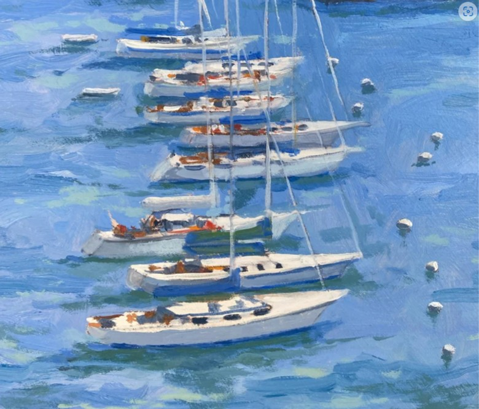

Prose
Catalina 22

The green light from the parking garage flooded through Glenn’s narrow bedroom window day and night. Now it covered the spare, dusty room in an occult emerald glow as he lay in bed with his arm around his girlfriend, naked, looking at pictures of a sailboat on his phone.
It was an out-of-focus photo of a small, 22-foot keelboat, with the hazy, far-off glow of a disposable camera. The boat looked like it had originally been white, but faded to a dingy eggshell; its jib and mainsail rippled in the wind as a nondescript-looking man in khaki cargo shorts and a blue t-shirt looked up proudly. A long time ago Glenn had decided that this would be his first boat.
Alicia stirred next to him, unsticking and recoupling their bodies. They had met on a dating app three months ago, six months after Glenn moved into this converted apartment on the second floor of a crumbling brownstone at the end of a forlorn block in East Harlem. During their first date, at a dive that kept its Christmas lights up year-round on the other side of the park where Alicia lived, they had an anxious, increasingly drunken conversation about Vintage Contemporaries and the micro-cultures of the Ohio Valley that led to sex so spontaneous, sudden, and easy that they just looked at each other, smiling and gaping in disbelief and embarrassment, for the rest of the night. They had hardly been apart since.
Alicia opened her eyes and saw Glenn’s open, round face flattened by the dim light of his phone.
“What are you doing?”
“Can’t sleep.”
He put his phone down, lay prone again and draped an arm around her.
“But what are you looking at.”
“The boat.”
Glenn often spoke of his fantasy of buying a sailboat and learning to tool around the Long Island Sound. Alicia thought this was a slightly unrealistic near-term goal for a man who was unemployed until two weeks ago, but Glenn seemed, somehow, to always get what he wanted.
“You know they call the Catalina the Jaguar in England. Which is funny, because it’s more like a Chevy.”
It wasn’t immediately obvious to Alicia why this was “funny,” but she sidled closer to him, craned her neck up and kissed his shoulder. The digital clock on the nightstand said that it was 2:57.
Glenn often woke up around this time, thinking about home. When the winter semester wrapped up at the beginning of the year he had abruptly notified the University of Toledo that he would not be renewing his adjunct contract, his girlfriend of five years that they were finished, and his parents that he would be moving out of their finished basement, a declaration they responded to with the same stony indifference with which they had first acknowledged his return. He spent an anguished night in self-recrimination with a bottle of whiskey, ignoring his parents’ punctuation-free text messages asking him to stop listening to Alice in Chains’ “Nutshell” so loudly. The next morning Glenn resolved to never think of these things again and to use his meager savings from two years of rent-free living to try and finally make it in New York City.
The boat was part of it, although Glenn’s seafaring experience was limited to sitting in the back of a motor-powered dinghy just off the shore of Lake Erie as his father and uncle wordlessly trolled for yellow perch and walleye, mirroring the fishes’ blank, pursed looks. Growing up in the shadow of Lake Erie, reading adventure stories and later both the true and imagined stories of the very rich, he imagined another world on the water. It was one of wind, spray, and surf. It would reward him for the extroversion, joy, and pride in the beautiful world around him that he had so often felt the need to repress. He never told Alicia about any of this, anything from home, and she rarely asked. It wasn’t part of his life anymore, and it certainly wasn’t part of hers.
He looked down at her long chestnut hair falling across her fine, clear rich girl’s face as she dozed. He had come to the city hoping to meet someone he could pour his saved-up joy and pride into, but hadn’t expected it so soon. Sometimes when he spoke of things like the Catalina a condescending, indulgent look crossed her face. It seemed to give her more pleasure than the indulgence itself afforded him. He knew her life could be dour, overtaxed, constrained. She, too, was a transplant living in relative penury, finishing an exhaustive training for her license as a social worker and therapist. So he was happy, then, to play up his naivete and give her something to smile about. When they were together — inventing hyper-specific, usually tragic backstories for the people who passed by Alicia’s apartment building on Columbus Avenue, taking languid, aimless morning walks through the park, misidentifying trees and dog breeds en masse, huddling together under the Christmas lights of the dive bar on 96th Street where they had met — every day was a holiday.
She was sleeping again. Tomorrow, at last, they would sail. A tall, rakishly handsome man who had overheard Glenn discussing his sailing fantasies at the 96th Street bar had invited them to join him on a day trip he had planned with friends up the Hudson River, from Nyack to Beacon. Glenn accepted the invitation after just twenty minutes of conversation, feeling big, expansive, adventurous.
Glenn had never been on a sailboat, and his knowledge of their workings was limited to a few skimmed Wikipedia articles and the first part of a 15-part online course for which he had paid fifty hard-earned dollars. This trip would be exactly what he needed, he thought: a chance to watch and learn from seasoned experts, hopefully putting in a hand or two where he could. It was the kind of twist of fortune he had come to the city so desperate to find. As they left the bar that night, phone numbers exchanged, he noticed Alicia scrutinizing him, her eyes shining with what he thought must surely be delight.
###
The 8:25 rumbled slowly out of Grand Central and up the steep, glacial cliffs of the Bronx, through the boxy grey of Yonkers into Westchester’s blazing red, orange, and butter-colored tapestry. Glenn looked over the shimmering Hudson and felt he was in danger of his heart leaping out into it. His mind raced thinking about the lives taking place amid this overflowing beauty, and the people who took it for granted in the same way that he already took for granted his dusty, hostile bodega.
Alicia was curled up on the seat next to him, covered in a burgundy wool shawl and reading Tess of the D’Urbervilles. He squeezed her thigh just above her knee.
Chester had agreed to meet them at the Tarrytown Metro North station and drive them across the Tappan Zee to his launch. As Tarrytown approached, the station’s bashful dormer windows set low against the backdrop of an elegant-looking town hall, Glenn tugged Alicia’s arm and saw that she had fallen asleep. Her long, straight hair spilled down her shoulders and seemed to trap the morning light that rose over the village, turning it to pure red.
“Alicia. Wake up.”
She stretched, yawned, and pulled the shawl tight around her shoulders.
“Chester just texted me, he’s in the parking lot.”
They stepped off the train and Glenn offered Alicia his elbow. On his other arm he carried a canvas tote bag that he had filled with a pint of bourbon, dry ham and cheese sandwiches, a giant bottle of water, a tube of extra-strength sunscreen and a small can of bug spray, improvisationally merging his adult appetites with his dimly-remembered childhood beach trips. He was wearing only a toothpaste-colored windbreaker over a heavily pilled, greying white oxford and bulky old chinos. He noted, with self-satisfied approval, how wonderful Alicia looked in a long, pleated mahogany skirt with matching tights and a cream-colored wool turtleneck.
Glenn spotted Chester first, leaning on the driver’s side door of a black Audi with long, white scrape marks on the passenger door. He was wearing a badly beaten leather jacket with the collar turned up over a thick, expensive-looking flannel. A pair of unfashionable wraparound mirrored sunglasses that reminded Glenn of Toledo were propped on his head, and he had large, round, boyish blue eyes set deep into an aristocratically elongated face. His temples were greying; Glenn realized he was probably a good ten or fifteen years older than he had originally thought.
Glenn led Alicia a few uncertain steps closer, and Chester looked up at them with a simple, sly smile.
“Hey there. Beautiful morning.”
They shook hands again and piled into the car, Glenn in the passenger seat. The interior was spotless, with a lingering residue of cigarette tar.
“Just had the interior cleaned, but still need to get the damn thing detailed.” Glenn wondered how the man had known what he was thinking. “Asshole swiped it while I was parked downtown.”
“I just cannot drive in New York,” Alicia said. “When I moved there I forgot. Self-preservation instinct, maybe.”
Chester chuckled and glanced at her in the rear view mirror.
“Pretty lady like you surely doesn’t need to. That’s what you’ve got Glenn around for, right?”
Glenn flushed, Alicia smiled indulgently, and the moment passed in silence as they merged onto the Tappan Zee. The bridge stretched like a heavy slate blanket over the river, bringing them closer, too slowly, to the Hudson’s auburn west shore. A jazz station flickered in and out of intelligibility.
“Figure we’ll stop by my place, pick up Sarah, and grab a bite before we get out on the water. You guys like Bloody Marys?”
“Absolutely,” Glenn said.
“Sarah’s your sister, right? You must have years of sailing experience between you.”
Glenn had always noticed, and appreciated, a sharp edge to Alicia’s flattery, even when it was turned on him.
“That’s right.”
“Will your lawyer friend be there?”
“Not today. Fucking flake, pardon my French.”
Chester rolled his window partway down and pulled a crumpled pack of Winstons from his jacket, waving it at the two.
“I’ll wait,” Glenn said. “Probably enjoy it more after one of those Bloody Marys.”
“Sure. And the lady?”
Alicia looked nonplussed for a moment, then shot a mischievous look at Glenn.
“Why not?”
“Atta girl.”
Chester punched Glenn’s shoulder jovially and reached into the back seat with a cigarette, then produced a lighter and held it back for her without taking his eyes off the road.
The Bearden family home was at the end of a long, winding lane in West Nyack, enveloped by tall, prematurely bare, brittle-looking maples and sycamores. It was a three-story, half-timbered Queen Anne that seemed both to reach out from and ramble endlessly backwards into the woods behind it. Glenn noticed a multicolored row of mostly broken windows just under the eaves, and a tooth-like cornice hanging below and missing several pieces of siding. It looked like the house’s face had been beaten in.
“Be it ever so humble,” Chester sniffed.
Chester led Glenn and Alicia around the side of the house to a screened-in porch. Chester opened its door and Glenn saw a pair of worn, fat retrievers lumbering toward them. They squatted at a baby gate that separated the sun room from the rest of the house and started baying, low and mournful.
“Ah, shit.”
Chester bellowed into the interior of the home and looked back at Glenn and Alicia, rolling his eyes.
“Sarah?”
He pushed the baby gate aside and the two dogs waddled, tails between their legs, through a dirt-caked laundry room into a large, sunny, disorderly kitchen. Bowls towered precariously on a central island; pegs stuck out from unexpected surfaces; a fire-eyed cartoon dragon smiled at the three of them over and over from the piles of empty Chinese takeout containers that littered the countertops.
“Don’t mind the mess. Sarah lacks motivation.”
He peered through the short corridor that led from the southern end of the kitchen into a dark and formal room that looked like it had been used for entertaining, a long time ago.
“Sarah!”
Squinting, Glenn saw a tall woman with a pile of askew, curly auburn hair rising, with obvious labor, from the couch.
“Fuck, Chet. Leave me alone.”
She spoke with a clipped outer-borough accent that seemed to swallow the end of each word.
“Good morning. We’re sailing. And we have company. Did you forget? Like you forgot to feed the dogs?”
“Fuck off, Chet. Christ. Fuck.”
Sarah wore silk pinstriped pajamas and her face was smeared with makeup. She walked into the kitchen, grabbed an open bottle of Advil, poured four into her palm and swallowed them dry.
“It’s Saturday. We’re taking the boat out. Remember?”
“I don’t remember my fucking birthday right now Chet. I was out until 3:00 and now I’m in hell.”
Chester rolled his eyes again, shaking the Bloody Mary mix.
“Aren’t you going to introduce yourself?”
She barely turned to glance at them.
“Hi, I’m Sarah.”
Chester poured Stolichnaya generously over ice into four glasses and added the mix.
“Lovely to meet you, Sarah,” Alicia said. “I’ve been there, don’t worry.”
Sarah openly appraised the two, the same sly smile that Chester had greeted them with creeping across her face.
“You’re going out with Chet today? Don’t let him have too much fun.”
Sarah picked up one of the Bloody Marys, pushed a browning celery stick to the side, and drank it down in one long, smooth gulp.
“Cheers.”
“Thank you for showing our guests the famed Bearden manners. Will you get dressed?”
“I’m not going, Chet!”
She was yelling now.
“My head is fucking killing me! Now you want me to go out in the sun today?”
“Freddie bailed on us. I need you out there.”
“I’m not going. I feel like shit. Plus I told Sherry we would go to the Alaïa sale.”
Chester put his drink down on the wooden island, much too loudly. The thin red liquid splashed the cuff of his flannel and his other hand balled into a fist and pumped hard. He put both hands on the table, looked down for a moment, and then up at Sarah through a mask of forced calm.
“Alright then. Enjoy. But will you feed the god damn dogs and let some light into this place? These people think we’re savages.”
“Not at all,” Glenn said, almost stepping on the end of his sentence.
Sarah turned, with a shrug of her shoulders, to address Glenn and Alicia.
“It was lovely to meet you. Don’t let Chet boss you around.”
She coolly looked Alicia up and down, looked over at Chester, smirked and walked into some mysterious deeper chamber of the house.
“Christ. Let’s finish these up and get going.”
The three of them silently drained their glasses as the dogs’ feeble barks followed Sarah to the interior.
“You know your way around a keelboat, right?”
Glenn coughed, the horseradish and tabasco burning in his throat. He smiled the same hopeful smile at Alicia that he had when he asked her to go back to his apartment on their first date before pulling her hip close against his and turning to Chester.
“Oh, sure. Spent plenty of time on the lake back home.”
###
By the time the Audi wheeled back onto Route 59 Glenn could see a thick grey sheet of clouds looming in the north, just over the tree line.
Chester launched into a bitter tirade against his sister, lambasting her laziness, her drunkenness, her choice in men, and her willingness to “leech” from their late parents’ rapidly dwindling estate. After he had referred to her as a “cunt” three times Glenn started counting; he nearly reached twenty before they reached the marina.
Glenn and Alicia rode in silence, Alicia shifting uncomfortably in her seat and shooting Glenn an arched eyebrow in the rear-view mirror, but the sourness and ill will evaporated in an instant when they reached the dock. Glenn pulled Alicia close again, shut his eyes for a moment and listened to the gulls, the gentle slosh of water, the anxious, hushed rustling of sails at rest and a lone halyard rudely slapping against a mast as the wind started to pick up. He felt a sudden and forceful certainty that he was placed on this beautiful Earth to be on this beautiful spot with this beautiful woman, and that he could — would — acquit himself honorably as a deck hand.
At the end of the farthest pier he spotted a modest-looking but immaculate small boat that gleamed white in the October sun, its shock-blue jib and mainsail coiled tightly around the boom and mast, bobbing up and down, sleek and restrained, like a boxer waiting for the moment to strike. It was a 22-foot Catalina, shining like a Christmas present.
“Hey! That’s a Catalina!”
“That’s right. That’s my girl.”
Chester directed Glenn in releasing the boat from its moorings, and Glenn and Alicia climbed in as the older man crouched at the stern and started the engine. It purred reassuringly as he took the tiller and backed the boat in a slow, lazy arc out of the dock, pointing its nose directly up the Hudson. Chester squinted at the bank of dark clouds up the river and looked back at Glenn, whose face was transformed by some blank, mystic anticipation.
“Looks like we could be in for a squall. Don’t worry, she’s all stocked up. Help me raise the mainsail.”
The older man attached the tiller stay, lifted himself up above the cabin and secured the main halyard while barely looking at it, handing it over to Glenn. A brief surge of wind made the boom vibrate like a rattlesnake behind them.
“Do the honors, kid.”
Having no idea what “the honors” were, Glenn started by tugging cautiously on the halyard. The huge, neon blue synthetic sheet began to tighten and move skyward. Gaining confidence, he began yanking on it with what he thought was a manly resolve.
“Whoa, whoa, whoa. Hold it.”
It was the same voice he had derided Sarah with, a mean, casually deployed sarcasm. Chester took the halyard and began pulling it, much more slowly.
“You don’t want it to bunch, or snag. Like this, see. Nice and professional.”
The mainsail rose and Chester climbed back down to the aft, producing a large bundle of synthetic white rope from under a cushion.
“I’m going to rig this so we can sail mostly single-handed and spell each other.”
Glenn nodded. Alicia was sitting on the opposite bench on the deck, one leg crossed over the other, watching Chester work. Her pale skin was luminous in the cold sun, with faint finger-strokes of sunscreen still visible below her eyes. When the rigging was complete and the sails were trimmed to his liking Chester sat next to the tiller and took his sunglasses off. Their place on the river was still cloudless and the sun beamed into his face. Glenn noticed large, dark circles under his eyes and faint, patchy grey stubble.
“We’re in for a haul. Five or six hours. Long as the wind doesn’t change too much we can stay like this for a while.”
Alicia stood up, beaming.
“Great job, boys.”
Glenn wondered to himself when Chester had become one of the “boys.”
“Nothing to it.”
Glenn gave Alicia a peck and turned back toward Chester, the marina receding into the distance behind him.
“You hungry yet? I brought sandwiches.”
Chester smiled.
“Alright, Suzy Homemaker. You’ve got him trained. I love it.”
Glenn looked down quickly. His face crumpled.
Chester clapped and stood up, enormous and tree-like against the blue southern sky.
“Sure, let’s eat. I have a chardonnay rattling around somewhere. Glenn, keep an eye on the wind.”
Glenn nodded again. He watched the wind pour into the sails and push the little boat up the river, which was crowded with bigger pleasure crafts and freighters. It bobbed slightly from side to side as Chester went into the cramped cabin, beckoning for Alicia to come search with him. Glenn loosely grabbed a piece of rope that connected the smaller front sail to an anvil-like piece of metal on the rail, looking for something to do, staring intently at the horizon.
Chester brushed past Alicia on his way back up to the deck, the tips of his fingers grazing her hip as he squeezed by with a dusty yellow bottle.
“For the guests, the good stuff.”
Alicia carried up a trio of equally dusty tumblers as Chester pulled out a wine key attached to his keychain and opened the bottle, pouring generously into each of them.
“Salud.”
The three glasses clinked in the sun and Glenn took a long, sweet, buttery pull, his other hand still gripping the rigging.
As the crew made its way north past Croton Point Glenn marveled at the rocky beaches and sentinel-like fly fishermen staking out their prey, as dread gripped his heart that Chester would ask him to do something. He wondered what Alicia was thinking; they hadn’t had a moment alone together since she fell asleep on the train. He had now not only brought her onto a boat with a complete stranger, he had lied about his capability, and there was no one to back them up, and she knew it. He watched her sip her wine. She looked calm, even happy.
The three began to talk, like strangers do, about work. Chester practiced law from an office near the bar where they had met, providing probate counsel to a shrinking network of his late parents’ friends and associates who had the unfortunate habit of fulfilling their implicit promise to die. Glenn explained how while he had parlayed his meager academic credentials into a job doing policy analysis on the lowest rung of the staff of the city’s technocratic and media-savvy new mayor, he was mostly now eager to “dig in” on a long-gestating novel. Alicia described what she could, within the bounds of professionalism, of her difficulties, amusements, and rewards as a therapist-in-training.
“Therapy.”
Chester stretched imperially and pulled on the rigging to help the boat keep in front of the powerful, but shifting, southerly wind.
“God knows people need it. Never saw the value myself. It’s like a cure-all to people your age.”
“Well, it probably has the most value for people your age.”
Chester shot Alicia a fox-like grin.
“Experience isn’t enough?”
Alicia propped herself up on one elbow. After finishing her sandwich she had taken off her turtleneck sweater to sun her arms, revealing the tank top she wore beneath it; she was now laying resplendent like a goddess on one of the aft benches facing the two men, her skirt hiked up just slightly. Glenn felt an anguished excitement about seeing her perfectly shapely body, which she usually kept concealed under bland, if modestly stylish, business casual, exposed under the pure light of heaven.
“Let me tell you a story.”
She sat up, refilled her glass, and put her oversized, dark, circular sunglasses on.
“When I first moved to New York I dated a man your age who was so keyed up that he cried if he saw a duckling walking alone in the park. I had to coach him through breathing exercises over the phone from the bathroom of the opera.”
That was the first Glenn had heard of this man.
“It turned out, he had just gotten divorced. His wife was still living with him. Kids, too. I only learned that at the end. Where Glenn and I come from, it’s usually easier to spot these types.”
Glenn blanched and gripped the rigging again. Chester’s smile widened.
“Eventually, I told him I was tired of babysitting a man twice my age. Of course, he wrote me letters. Bothered the doorman at my building. Called my work. So instead of getting a restraining order, like I should have, I agreed to meet with him one more time to hear him out.”
A cloud passed over the sun. Her hair looked very dark against her pale, smooth skin.
“I was supposed to meet him at the St. Regis hotel bar, you know, the one with the mural. I went straight from work and I remember feeling so strange, sitting there in my sweaty office clothes, looking around at the tourists and the old people in their nice clothes. I sat there and drank two martinis and realized that at that moment I could not remember why I had agreed to meet him. I didn’t feel curious. I didn’t think I could convince him to leave me alone. I don’t know what I thought. It just didn’t feel like I could stop whatever that feeling was coming out of him anymore.”
A foghorn bellowed far, far in the distance. Chester was still smiling his strange, condescending smile.
“Christ,” Glenn said. “So what happened?”
Alicia pushed her sunglasses back up to the top of her head.
“He didn’t show. Like I said. Therapy.”
Chester laughed, too loudly, coughing at the same time. He was grinning like a madman. While Alicia was speaking the sky had turned a nauseous aqua green.
“You may be right,” he said, slapping the bottom of an unopened pack of Winstons against his hand. “But I’ll take the open sea and a pretty woman any day of the week.”
He turned toward Glenn and clapped his back.
“And an able hand on deck,” he said, winking lewdly as a fine, cold mist began to fall on their upturned faces.
###
The squall hit just as they rounded Peekskill, toward the winding, narrower path that led to Beacon.
They pulled on thin orange ponchos as Chester adjusted the rigging. He muttered and stomped around the deck as Glenn and Alicia stood side-by-side, now pelted by hard, cold rain that felt too close for Glenn’s comfort to the hard hail of the Great Lakes.
“Fuck. Shit. God damn it.”
Satisfied with the sails for the moment, Chester went into the open cabin where the rain was dousing the empty bottles of Merlot and Chablis and Corona, and the dirty maroon carpeting, and the disused gadgets strewn about on the table and floor. Finally he pulled a large wooden board from a cavity under the aft, hauling it up and handing it to Glenn roughly.
“Hold this.”
He was yelling now, above the howling wind and billowing sail and loose objects rattling through the cabin like a snow globe.
“We’re going to have to wait it out. Everyone will crowd that tiny-ass launch in Montrose, and there’s no way we’re turning around to the bay in this wind. We’re just going to anchor. Alicia, you go down below. Glenn, keep watch for a minute.”
Glenn, searching his mind for what he thought he might need to “keep watch” for, thought that he tasted blood. He looked up at Chester, whose face was locked in a miserable, resentful resolve. A shipping freighter plodded impassively through the storm on the other side of the river behind him. Glenn realized that he, too, was afraid, and at this point some four hours after their Bloody Marys quite drunk.
“Fucking shit. Fucking bullshit. Sarah is fucking shopping with our parents’ money while I sit on this boat and get drenched. And for what.”
His footsteps slapped loudly on the wet deck. He turned to Glenn with a dull, sardonic schoolmaster’s look in his eyes.
“Would you please make yourself useful and stand back on the rail so the boat doesn’t fucking tip over, thank you.”
Glenn did as he said but felt indignation burning in the back of his chest and throat. It was very dark now, almost like night, and he could no longer say with confidence which direction was east and which was west. He was at the mercy of Chester’s knowledge — whatever it was — and his generosity, which now that he thought of it, yes, he seemed a little too eager to offer to Alicia in particular. Now their lives were in his hands. He hadn’t even fetched them life jackets, for God’s sake.
The boat tilted hard to starboard where Glenn was standing and a swell of water flooded the deck, leaving behind a foot-long yellow perch. It was stamping its rigid green mohawk rhythmically and furiously against the fiberglass deck, looking up at him with its stupid, pinched, expressionless face. Glenn stared back as the boat righted itself. The rain was soaking through his layers. He felt cold, clammy, close to the river and very far from home.
“Fucking look alive kid Christ what are you doing—”
The stern of the boat lurched upwards, knocking Glenn onto his back and nearly over the rail. He writhed on the deck as the wind howled behind his head, in the exact opposite direction it had been a moment ago. It felt like something that shouldn’t happen; like one of the dreams that would wake him up thinking about flavorless, silent dinners and the steaming, polluted Maumee River.
Chester was standing at port, pulling steadily on one of the riggings. Glenn saw the mainsail boom start to trace a perfect arc across the driving rain and wind, with a violent, mysterious urgency. In a moment he saw that the arc was interrupted only by the dead center of Chester’s temple. He made to cry out but something hot and dry in his throat caught and the long metal pole hit the tall man’s skull with a pang like an aluminum baseball bat hitting a fence post. Chester’s horrible sunglasses went flying and he crumpled to the deck, a small trail of blood flowing from his ear toward the helpless, raging perch.
###
Below deck, lit only by what meager, cloud-smothered daylight remained filtering through the portholes, Alicia heard Glenn yelling and pounding on the hatch board.
She had started to take an anxious pleasure in sifting through the weird detritus of this horrible man’s life — empty bottles, abandoned tools, a few ancient-looking McMurtry and Michener paperbacks — as she sheltered from the storm. He had seemed charming enough at the bar, sure. But early on today she realized she had met this man before, plenty of times: the fading country squire, desperate to show off for any wide-eyed boys or open-legged girls willing to grant him an audience.
She didn’t particularly enjoy being leered at all day, but she had dealt with much worse. If pressed, or rebuffed, Chester was clearly the type to back off and sulk. So why not take advantage of his generosity? All the better if it fed Glenn’s daffy, cheerfully entitled, faux-aristocratic spirit. That the city, and this life, were ripe for their taking was the founding myth of their love.
Everything was boring until Glenn came along: her boring high school girlfriends who had also made it to the city from the Indianapolis suburbs, too lazy or unimaginative with their parents’ money even to put it toward acquiring a personality; her boring, too-earnest colleagues and teachers who were more interested in splitting hairs over clinical diagnoses than debating Freud; the sleepy Upper West Side, which she fled as often as possible, despite Glenn’s inexplicable enchantment with it.
Glenn might have been naive — his big, white face, tousled red hair and bottle-green eyes made it look like he had literally just fallen off the turnip truck — but he had an education, he was earnest, and he showed up to things on time and hated being bored. When they took sail today he had looked like a prince, standing on the bow with his binoculars, and she had wanted just to hold him so badly that she thought her heart would explode.
She knew that if her beloved Candide was yelling and carrying on like this, then, something must be horribly wrong. She pushed the board aside and he rushed down into the cabin, soaking wet, the boat rocking crazily from side to side and moving fast now in a direction unintelligible to either of them.
Glenn pulled the hood of his poncho down. He was dripping with cold water and there was a thick, jagged crack through one of his lenses.
“The boom hit Chester. It hit him right in the side of the fucking head. It took him out.”
The boat seemed to plunge four feet down into the water, bumping their heads on the top of the cabin.
“Oh my God. Is he okay?”
“I have no idea. He’s unconscious but he’s still breathing. We have to call someone.”
Neither of their cell phones had a signal.
“Fuck. Fuck. Fuck.”
Alicia took Glenn’s face in her hands.
“Did he get the anchor down?”
“I don’t think so.”
He looked at her with a sick mystification.
“I don’t know how to sail.”
Anger, love, and fear pushed quickly through her heart.
“I know.”
Glenn stepped back and pressed his hands hard into his eye sockets.
“The radio.”
There was a handheld radio docked next to a 12-inch television and VHS tapes of Ziegfeld Follies, Meet Me In St. Louis, and How Green Was My Valley. Glenn picked it up and looked at the display, which showed an unintelligible series of letters and numbers.
“Do you have any idea what the fuck this means?”
“No!” Alicia’s voice broke.
Glenn fumbled with a grey rubber button.
“Hello? Mayday. Mayday. Is that what we say? We are… near Peekskill. Somewhere. In a Catalina 22. Mayday.”
They heard water sloshing above on the deck.
Glenn spoke in a slow, deliberate voice, like from a dream.
“We have to get him down here. We’ll get him, and then we will figure this radio out. It’s just a radio. We will figure it out.”
“Go. Go.” She was whispering now.
He kissed her hard on the mouth, swallowed, turned around, took a step toward the stairs, and stopped, slumping and crouching over, his hands on his knees.
“Glenn?”
He teetered on the tips of his feet, toward the storage compartment on the port side.
“Glenn? Go!”
Glenn leaned, still dripping, into the compartment, ignoring her. He fished around for a minute and emerged with a short, stubby pistol with a bright hunter orange casing.
“I remembered,” he said. “From the manual. Where it was.”
Alicia helped him push the hatch board aside. It was darker than ever on the river, and an eerie pink and green light suffused the rain. Water that had built up on the deck poured into the cabin as Glenn pulled Chester’s legs over and they pulled the waterlogged, unconscious man below deck, listening for his slow, ragged breaths. Then Glenn stood in the rain at the top of the stairs, wrestled a prayer out of distant memory, pointed the neon pistol at the dark sky and fired a bright red burst into its sprawling wet belly.
###
After the Stony Point Fire Department rescued them, Glenn and Alicia rode with Chester in an ambulance to the hospital in Nyack. The two spoke briefly with the local police, who informed them that Chester had only a minor concussion. They were given a stern warning about sailing without certification and Glenn paid for a $150 Uber back to East Harlem, where they spent the evening holding each other, crying, laughing in disbelief, and finally, with some effort, settling into their ongoing argument about which of the meager neighborhood Thai offerings they should order. Alicia never left.
Chester woke up in the middle of the night in a clean, freshly painted room at the hospital in Nyack, lying on his back and struggling to focus. He turned his head to the side, feeling pains old and new. He saw his sister in an oddly-cut suit jacket and sweatpants, sitting in an uncomfortable-looking chair and staring at her phone in the dark. He realized where he was and the pounding in his head informed him of what must have happened. He felt confusion and disappointment in his absent sailing companions, and then a rush of tenderness for his sister’s inexplicable constancy. He looked out the window and saw, under fluorescent lamplight, the neatly-mowed cemetery where his parents were buried, right across the street from the hospital. He thought of the beautiful young woman who was sprawled on his deck under the glorious sunshine just hours ago and realized, with sadness and relief, that he was home.
On Monday morning Glenn returned to City Hall. He obsessed during his commute over how he would describe the weekend’s events, eventually realizing that he had no words. Why was it, exactly, that the boom had suddenly turned to strike Chester? Which way had the wind been blowing? Was the sail “windward” or “leeward” before it turned? After it turned? Every way he could tell the story seemed loony, childish and imprecise.
Despite everything, he felt a strange and visceral urge to get back on the water as soon as possible, more powerful than before. Experience had thrown his amateurishness and ignorance into sharp relief. But under pressure, he had done the right thing. He had not known, yet he had done.
Glenn draped his blazer over the back of his desk chair and sat down. Ellery, the louche Brit who sat next to him, spun around and nodded.
“Glenn. Glengarry, Glen Ross. John Glennon.”
“Morning, Ellery.”
“Wild weekend, lad. Cocaine. Leopard print.”
A beat passed.
“I watched a three-hour YouTube video of a Japanese woman cooking an omelette. What’d you get into?”
Glenn felt the cold rain in his mouth as he gaped up at the billowing mainsail, the taste of metal that flooded it when Chester hit the deck, and the hungry sweat and spit that Alicia offered him that night, when she seemed somehow more desperate and more commanding than ever. He tripped angrily again over his lack of words, the very nouns, to precisely describe the rough rope in his hand, the wild, buoyant motion of the boat, and the irrepressible glee of seafaring that he somehow felt even while he and Alicia huddled under a reflective blanket on the rescue ship. When he woke up at 2:57 in the middle of the night after the wreck he saw nothing but the crashing, endless river.
“Little pleasure cruise down the Hudson, actually.”
Ellery leaned back, incredulous.
“Shit, Glenn. Didn’t know you sailed.”
Glenn thought of Chester looming against the bright horizon, a cigarette in his hand, smiling, taking pure, entitled, animal pleasure in the world. He didn’t want to talk to him ever again, but he realized now just how glad he was that they had met.
“Sure I do.”
He leaned back himself, crossed a leg, and imitated Chester’s wolfish, confident grin.
“I keep a boat up near Nyack, actually. Beautiful sailing this time of year.”
He knew that he still had a lot to learn.
Derek Robertson is a writer in Brooklyn whose reporting and criticism have appeared in The Atlantic, Indianapolis Monthly, Liberties, The New Republic, Politico, The Ringer, The Washington Examiner and elsewhere.